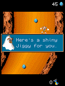

Banjo gave us NEXE bytecode with its classes intact and resources that looked like PNGs without being ordinary PNG files. We needed an ExEn environment for this one, beyond the Java MIDlet route.BJ01
An ExEn start.
We used Handyplay’s portable ExEn core, credited to mohamedahmed166e, with the original runtime classes and font it required. Those upstream and original-runtime contributions became part of the foundation we could carry into later ExEn games.BJ02
The Banjo work removed an upstream forced 75-millisecond speedup and preserved the game’s requested period. A FIFO kept short press/release edges in order without generating extra ticks. Warnings and diagnostic work also stopped being a recurring tax on ordinary play.BJ03BJ06

Banjo after the first Egg Scramble clear,45 eggs shown and the original Jiggy message. Historical desktop original-runtime frame.
Open the image for the full original view.
BJ90Hold. Then let go.
We had to keep numeric 5 separate from menu Select. The original catching help says to hold Down or 5 to build power, then release to throw. A generic action button sending the menu command wouldn’t get the fishing line cast.BJ04
The retained original campaign run cleared Egg Scramble with 45 eggs, awarded the first Jiggy and continued into Sheep Dip. Holding 5 charged the gauge; releasing cast the fishing line. Down produced the same charge-and-cast frames.BJ05
Saving a native snapshot found a different kind of missing piece. Restoring heap objects was not enough when decoded image buffers and palette indices had disappeared. A stored allocator address also could not be reused in a fresh process. Preserving the image data and rebinding the live allocator made the saved frame and following input sequence reproducible.BJ03BJ05
A later host stop stays in the record.
The later shell kept the original/native/audio bytes and the Power/Throw behavior. Its attempted fresh host gameplay replay nevertheless stopped with SIGILL. The notes kept the earlier 0.1.0 progression evidence under its own version rather than presenting it as a new successful run.BJ08BJ09
We kept that later host stop separate from the earlier campaign run. It doesn’t establish that the installed phone game regressed. The first Jiggy image comes from the recorded 0.1.0 progression; the later shell has its own layout checks and the failed replay to account for.BJ08BJ10
About these records
The chapter credits the upstream portable VM and separately identifies its original runtime inputs. Those original firmware/font/game files are not distributed here. Gameplay and image/snapshot outcomes belong to the retained 0.1.0 host run. The later SIGILL is a host replay failure with unchanged native bytes, not an invented phone regression. Framework worker doubles do not supply live original-game acceptance.
The receipts
Selected report lines, investigation notes and recorded feedback. Each receipt keeps its original source and scope.
BJ01 / NEXE bytecode and PNG-shaped resourcesCheckpoint investigation notes
Source: 01-Banjo_Kazooie_ExEn_Bridge_v0.1.0_PRIVATE_CHECKPOINT.zip / Banjo_ExEn_Bridge_v0.1.0_PRIVATE/evidence/intake/PACKAGE_FINDINGS.md · selected lines 4–14, 19–27
Verified directly from uploaded bytes: - 128,380 bytes; SHA-256 f363f526fc65f3735eb633a7286c0de95bbb560d66126f43dcf0da601f1ff182. - Magic `NEXE`; +4 tag 0x80; gamelet name `Banjo_Kazooie` at +0x14. - Main class is CRC32(name), `0x3506effe`; exists at tail start 0x10254. - Resource count 196 at +0x34; offsets at +0x38; flags at 0x34c. - Resource zero starts 0x410. End-of-resource sentinel 0x10254. - Full contiguous tail has 19 valid 4CVP classes and 249 methods. - Every title-owned method is bytecode; none has native flag 0x100. - Class tail finishes exactly at EOF. No damaged/truncated tail. - Resource 195 contains modified-UTF version `T01.00.09`. [... selected excerpt ...] - Images are resources 0–32: 33 total. - ExEn images are PNG-shaped streams with no chunk CRCs/IEND and IHDR compression=1. - IDAT high nibble selects codec: 26 codec5, 5 codec3, 2 codec1. - Resource33 is small configuration data (`enHig` etc.). - Text resources34–190, with 0xff-separated strings/lines. - Resources191–194 are 16-color palette data. - `extract_banjo_assets.py` decodes all33 images into standard PNGs. - Decoded dimensions exactly match needed raster sizes, including all five codec3 images. - `assets_sheet.jpg` contact sheet visually verifies genuine game assets.
BJ02 / The upstream core and original runtime inputsCheckpoint investigation notes
Source: 01-Banjo_Kazooie_ExEn_Bridge_v0.1.0_PRIVATE_CHECKPOINT.zip / Banjo_ExEn_Bridge_v0.1.0_PRIVATE/native/README.md · selected lines 3–7, 58–67
This directory contains the portable ExEn 2 VM, its platform-native API handlers, a small C host interface, and an Android JNI interface. It executes the supplied original `.exn` game bytecode. The Android build targets ARM64 and Android API 29 or later; ELF TLS is used by the allocator. ## Source and license The VM and native handlers originate from [Handyplay's ExEn core](https://github.com/mohamedahmed166e/my-mre-emulator/tree/main/exen-core), commit `460b149302e9a52523bc314a37efabbee9f3d666`. The repository is distributed under AGPL-3.0; see `LICENSE-AGPL-3.0.txt`. The bridge and project modifications are supplied under the same license. Game content and original runtime firmware retain their original ownership. [... selected excerpt ...] The private runtime uses original ExEn runtime classes and its embedded bitmap font extracted from the stock simulator. The full executable is not included. Source archive: [EXEN-V2 Emulator.zip](https://archive.org/download/spyro-exen/EXEN-V2%20Emulator.zip), MD5 `24275cdff33263bd4da977ae518c9a47`. Original `EXEN-V2.exe`: 405,504 bytes, MD5 `f102c98717b4d680f9a38199fb3c0421`, PE image base `0x400000`. | Extracted asset | PE virtual address | File offset | Bytes | MD5 | | --- | --- | --- | ---: | --- | | Runtime classes, app `exen_builtins.bin`, copied to `assets/unk_4494F0.bin` | `0x4494F0` | `0x494F0` | 44,940 | `870bef21d6f269e3e3d91943c66de8e8` | | `core/assets/font_5x8.bin` | `0x454DD0` | `0x54DD0` | 1,280 | `b2898698a79885529d4e9bd10455e775` | The runtime blob begins with `4CVP` class records and matches the hash required by the upstream core. The font is the original 256-glyph 5 × 8 bitmap atlas.
BJ03 / Pacing, FIFO and snapshots gained in the Banjo bridgeCheckpoint investigation notes
Source: 01-Banjo_Kazooie_ExEn_Bridge_v0.1.0_PRIVATE_CHECKPOINT.zip / Banjo_ExEn_Bridge_v0.1.0_PRIVATE/native/README.md · selected lines 42–54
`banjo_state_size()`, `banjo_state_save(buffer, capacity)`, and `banjo_state_load(buffer, length)` support native snapshots within the same running session. These preserve image rasters, palette indices, class statics, heap objects, framebuffer, and pending input. They are separate from the game's own persistent `saveCtx` storage. ## Project modifications - Added the C ABI host and Android JNI shim. - Removed the upstream recurring Banjo heap census and object creation tracing. Opcode tracing stays disabled, and runtime warnings are held in a fixed buffer for an explicit report. - Replaced the debug allocator with the freeing SMP allocator while retaining the VM's garbage collection between ticks. - Preserved the original requested timer period; removed the upstream global 75 ms speedup. - Added a bounded FIFO for key transitions. Brief taps and multiple touch controls arrive in order without advancing extra game ticks. - Added a direct auxv reader so page-size and vDSO discovery work from a shared library without external libc symbols. - Corrected native snapshot serialization to preserve decoded image pixels and palette indices. Snapshot version is 4. - Preserve the live allocator interface when reconstructing a snapshot, so a stored process address is never reused as an allocator vtable. - Made an instruction-budget halt observable as an aborted host tick instead of reporting a normal return.
BJ06 / Original timer and the tested scopeCheckpoint investigation notes
Source: 01-Banjo_Kazooie_ExEn_Bridge_v0.1.0_PRIVATE_CHECKPOINT.zip / Banjo_ExEn_Bridge_v0.1.0_PRIVATE/VERIFICATION.txt · selected lines 3–22, 34–43
VERIFIED THROUGH EXECUTION The exact supplied original ExEn NEXE package executes through the VM. Legal screen, publisher splash, title, main menu and campaign navigation render. Original sliding gameplay scrolls, eggs and obstacles appear, and left/right inputs change Banjo's position. The first Egg Scramble mission was cleared with 45 eggs, awarded the first Jiggy, and progressed naturally into Sheep Dip. Holding numeric 5 changes its power gauge; releasing launches the fishing line. Holding/releasing Down produces the same resulting raster as numeric 5. Right softkey pauses and Select resumes. Short press/release input transitions queued before a VM tick are preserved. Native snapshots restore the exact frame and the same next 12 frames; this also passes after native shutdown and a fresh boot. The original game writes its own save-Banjo_Kazooie.dat file through saveCtx. The original game requests a 125 ms timer period (8 ticks per second). See evidence/validated_suite/, evidence/progression/ and their reports for frame hashes, control actions, timings and runtime counters. No VM faults, warnings or input overflows were observed in the verified paths. The final reproducible checks executed 1,559 ticks with zero VM faults, warnings or input overflows. Snapshot continuation also passed in a separate host process. The current combined record is evidence/VERIFIED.txt. [... selected excerpt ...] SCOPE / REMAINING DEVICE CHECKS Host execution is not physical Android testing. Phone touch feel, performance, battery temperature, system-bar behavior and hardware audio have not yet been measured on the S25 Ultra. Later missions and complete campaign progression are not certified by the tested opening paths. The verified game paths emit no melody events. Audio remains unverified; the Android frontend supports native ExEn monophonic melody requests, but that does not establish that this title produces sound or that the game's full audio behavior is reproduced. No extracted Sound OFF text is treated as an observed menu setting.
BJ90 / Historical image / Banjo after the first Egg Scramble clearHistorical host capture
Source: Banjo_ExEn_Bridge_v0.1.0_PRIVATE/evidence/progression/01_first_mission_clear.png
Original game pixels retained from the stated historical host check. No physical-phone capture is implied.
Unchanged historical image. Source member: Banjo_ExEn_Bridge_v0.1.0_PRIVATE/evidence/progression/01_first_mission_clear.png SHA-256: 6f0752b4ecf9867bc35e09d2de986341cf0831dc2556c0f45824f1415f475fb3 Banjo after the first Egg Scramble clear,45 eggs shown and the original Jiggy message. Historical desktop original-runtime frame. Scope: Historical desktop original-runtime framebuffer; not a physical-phone screenshot.
BJ04 / Numeric 5 is not SelectCheckpoint investigation notes
Source: 01-Banjo_Kazooie_ExEn_Bridge_v0.1.0_PRIVATE_CHECKPOINT.zip / Banjo_ExEn_Bridge_v0.1.0_PRIVATE/evidence/intake/PACKAGE_FINDINGS.md · selected lines 42–51
- Help resource76 states catching controls: hold Down OR5 to increase power; release to throw. - Help names the soft-button Pause to pause. - Upstream host codes: UP='2'(50), DOWN='8'(56), LEFT='4'(52), RIGHT='6'(54). - Upstream FIRE/SOFT1=-8 (primary command/Select); SOFT2=-7 (secondary command/Back). - Numeric5=53 is distinct from menu Select code -8. Safe dedicated gameplay action choice is53. - Banjo handlers call inherited key mapping hash0xd82cfb99, then compare returned action constants0x55ffee01..05. - Two game inputs are to be delivered as press and release, retaining holds for throw charging. - Main initializer queries runtime screen width and height rather than declaring fixed dimensions. - Upstream starts with device Manuf.003, 132×176, depth8. Need execution validation to confirm practical layout. - No justification for diagonal game input was found: handlers compare four direction actions plus fire.
BJ05 / A Jiggy, Sheep Dip and snapshots across a fresh processCheckpoint investigation notes
Source: 01-Banjo_Kazooie_ExEn_Bridge_v0.1.0_PRIVATE_CHECKPOINT.zip / Banjo_ExEn_Bridge_v0.1.0_PRIVATE/evidence/VERIFIED.txt · selected lines 13–24
Observed original bytecode behavior: - Publisher splash, Banjo title, main menu and Rescue Kazooie campaign loaded. - Original sliding gameplay advanced, with eggs, obstacles and input-controlled Banjo movement. - First Egg Scramble mission completed with 45 eggs; first Jiggy awarded. - Next Sheep Dip mission loaded through normal campaign progression. - Holding numeric 5 for 8 ticks moved the power gauge; releasing cast the fishing line. - Holding Down and releasing produced exactly the same charge and cast framebuffer hashes as numeric 5. - Left and Right produced different visible Banjo positions from an identical saved state. - Pause held a stable framebuffer for 40 ticks; Select resumed gameplay. - Native game saveCtx produced a nonempty per-game save file. - Snapshot restore reproduced the saved framebuffer and a subsequent 12-tick sequence exactly. - Core reboot and separate-process restore were exercised. Missing image buffers and stale allocator bindings were found and fixed before these final passes.
BJ08 / Native replay fails on the later hostCheckpoint investigation notes
Source: Banjo_Kazooie_ExEn_Bridge_v0.1.1_PRIVATE_CHECKPOINT.zip / Banjo_ExEn_Bridge_v0.1.1_PRIVATE/VERIFICATION.txt · selected lines 37–51
HOST GAMEPLAY REPLAY LIMIT The included unchanged v0.1.0 host library loads but the attempted fresh original execution replay terminates with SIGILL (illegal instruction) in this host. No successful new gameplay run is claimed. Native code and the Android ARM64 binary were not changed to work around a host-only failure. Historical v0.1.0 execution evidence (Egg Scramble, first Jiggy, Sheep Dip, saves, snapshots and JNI smoke) is retained under its original evidence folders; the original verification text is in evidence/historical-v010/. It is not v0.1.1 evidence. PHONE ACCEPTANCE STILL REQUIRED Cold startup, live original gameplay, direction/diagonal comfort, action hold/release, physical controller behavior, both mode layouts at phone font/ display scale, system bars/cutouts, audio, saves, background/resume, return to Omni and actual one-tap Downloads report export are not certified by host or Robolectric checks. Later missions/audio remain outside historical coverage.
BJ09 / The later shell keeps pacing and Power/ThrowCheckpoint investigation notes
Source: Banjo_Kazooie_ExEn_Bridge_v0.1.1_PRIVATE_CHECKPOINT.zip / Banjo_ExEn_Bridge_v0.1.1_PRIVATE/README_FIRST.txt · selected lines 9–25, 28–45
NORMALIZATION Uses the actual Wakka Bridge Gameplay UI Kit v1.1.2 JAR: launcher icon/title, ExEn platform label, SAVE REPORT and three-dot utilities. The original 132x176 framebuffer stays aspect-correct in measured portrait/landscape safe space. No launcher page or forced immersive mode is added. CONTROLS Original numeric directions are 2/8/4/6. The digital D-pad supports continuous sliding and the existing simultaneous cardinal combinations. Power/Throw is numeric 5: hold to build power, then release to throw in catching missions. Select is original ExEn -8; Pause is -7. The original game explains each mission. Original Keypad switches inline with one tap. Its numbers replace the numeric D-pad; this game does not have a second separate directional input group. Select, Pause, Power/Throw and 0 remain directly available in both modes. D-PAD RETURN switches back without pausing or recreating the game. Owned touch and physical sources protect overlapping holds and release orders. Android Back runs real worker cleanup and exits to the caller, including Omni. [... selected excerpt ...] REPORTS SAVE REPORT writes genuine text to Downloads/Banjo-Kazooie ExEn Bridge/ through an independent exporter. This bridge had only copy/share text actions, so the kit's fallback file writer is used. Startup/runtime faults also request reports; failed exports remain pending privately and are not called successful. Reports read volatile diagnostic fields without asking or waiting for the VM. PRESERVED Exact original game, runtime class blob, ARM64 native library, all native source, audio implementation, launcher icon and owner signing key match v0.1.0. The existing input FIFO, paced worker, original 125ms timer and save location are retained. Native cleanup remains asynchronous on its owning worker. No shutdown dialog, join, countdown or artificial exit delay is added. VERIFICATION Read VERIFICATION.txt. Compilation, packaging and framework UI checks passed. This pass does not establish live phone gameplay, comfort, audio or Downloads export. Historical original execution evidence is retained and labeled.
BJ10 / Five current framework tests use explicit worker doublesCheckpoint investigation notes
Source: Banjo_Kazooie_ExEn_Bridge_v0.1.1_PRIVATE_CHECKPOINT.zip / Banjo_ExEn_Bridge_v0.1.1_PRIVATE/VERIFICATION.txt · selected lines 22–35
Actual Banjo MainActivity against the compiled release JAR: All 5 Android framework integration tests pass. The game worker and report I/O are explicitly test doubles, not simulated or claimed original gameplay. Tests exercise the real Activity, shared controls and renderer View: - Cold startup, both modes, stable renderer attachment, native aspect, drawing, minimum button geometry at 1080x2340, 2340x1080 and 960x1920. - Two pad contacts plus held Power/Throw; independent direction/action releases. - Numeric 5 aliases and physical holds across inline mode switches; original Select/Pause/star/hash logical bindings. - Report and fault callback wiring without pausing; Android Back exits while keypad is open and releases held inputs without sending the original softkey. - Controller key-up in utilities and lifecycle pause cleanup. The test environment does not resolve the APK's app-specific icon resource; its packaged pixels are separately verified by APK inspection (aapt crunches PNGs).